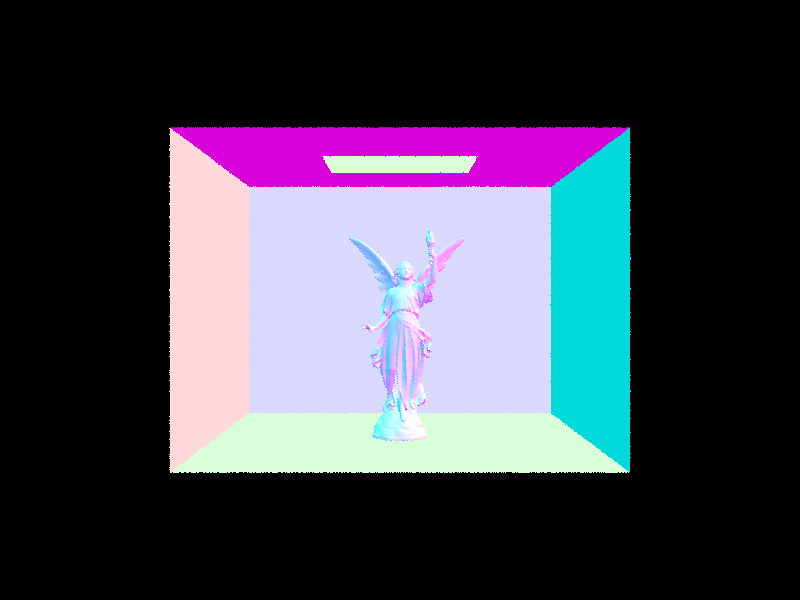
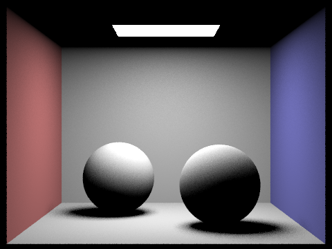
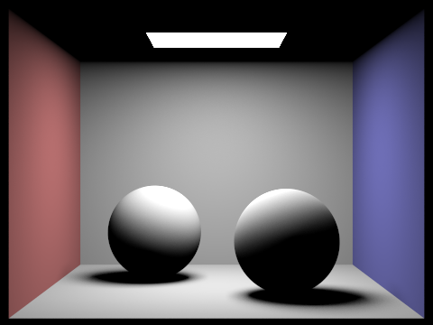

CS184 Summer 2025 Homework 3 Write-Up
Link to webpage: hw-webpages-su25-98sean/hw3
Link to GitHub repository: hw-webpages-su25-98sean
Overview
In this project, I built a pathtracer in order to support realistic lightings and shadows. As builing blocks for the path tracer, I started with implementing the functions for sampling intersections with triangles and spheres, followed by builing the Bounding Volume Hierarchies (BVH) for efficient sampling. With these building blocks, I tried to build various illumination techniques such as direct illumination with zero-bounce radiance and one-bounce radiance. For one-bounce radiance, I enabled the hemisphere sampling and importance sampling. In addition, by introducing indirect illumination with Russian roulette, the images became more realistic and smooth.Part 1: Ray Generation and Scene Intersection
In terms of the ray generation and primitive intersection parts of the rendering pipeline, the program first computes the position of the input sensor sample coordinate on the canonical sensor plane one unit away from the pinhole. That is, Camera::generate_ray() assumes that the virtual camera sensor is on z = -1 and the center is at (0, 0, -1), and converts the bottom left coordinate into (0, 0) -> (-tan(hFov/2), -tan(vFov/2), -1) and the top right coordinate into (1, 1) -> (tan(hFov/2), tan(vFov/2), -1).
This function, Camera::generate_ray(), is called by PathTracer::raytrace_pixel() for each pixel with the number of samples, and PathTracer::est_radiance_global_illumination is also called in the function to obtain the radiance.
For the ray-triangle intersection, I use the Moller-Trumbore algorithm from discussion, which implies that given the barycentric coordinates P = (1 - b1 - b2) * P0 + b1* P1 + b2 * P2 and the equation of a ray r(t) = O + tD, [t b1 b2]^T = (1 / (S1 dot E1)) [(S2 dot E2) (S1 dot S) (S2 dot D)]^T where E1 = P1 – P0, Е2 = P2 – P0, S = O – P0, S1 = D × E2, S2 = S × E1.
After getting t, b1, b2 from the Moller-Trumbore algorithm, my implementation checks if t is in range [r.min_t, r.max_t] as well as all the barycentric coefficients are in range [0, 1].
As presented below, I was able to render some images with normal shading.
CBepmty.dae |

CBspheres_lamberditan.dae |

cow.dae |
teapot.dae |
Part 2: Bounding Volume Hierarchy
Rendering the last two images, cow.dae and teapot.dae, required a lot of time. To address this issue, I constructed the BVH data structure.
For a given BVH node, I first compute the mean 3D position of the centroids. This gives me three candidate split points: one along each axis (X, Y, Z). For each candidate, I then compute a split cost. The cost function is defined as the sum of the surface areas of the child node bounding boxes, multiplied by the number of primitives within each child. Finally, I select the split point that yields the lowest cost, ensuring tighter bounding boxes. This approach significantly improves primitive density within bounding boxes, reducing the chance of unnecessary ray-BVH intersections without hitting an actual primitive.
I chose the mean centroid position as the split point because, under a reasonable assumption of uniformly distributed primitives, the mean effectively approximates the median. This method gives a well-balanced BVH tree and optimizing construction performance, as it avoids the sorting overhead of a median split.
BVH indeed makes the rendering faster. Here's what I experimented:
Before BVH
cow:
[PathTracer] Rendering using 1 threads
[PathTracer] Collecting primitives... Done! (0.0013 sec)
[PathTracer] Building BVH from 5856 primitives... Done! (0.0002 sec)
[PathTracer] Rendering... 100%! (78.5540s)
[PathTracer] BVH traced 480000 rays.
[PathTracer] Average speed 0.0061 million rays per second.
[PathTracer] Averaged 5856.000000 intersection tests per ray.
After BVH
cow:
[PathTracer] Rendering using 1 threads
[PathTracer] Collecting primitives... Done! (0.0014 sec)
[PathTracer] Building BVH from 5856 primitives... Done! (0.0157 sec)
[PathTracer] Rendering... 100%! (0.2204s)
[PathTracer] BVH traced 480000 rays.
[PathTracer] Average speed 2.1783 million rays per second.
[PathTracer] Averaged 0.000000 intersection tests per ray.
Before BVH
teapot:
[PathTracer] Rendering using 1 threads
[PathTracer] Collecting primitives... Done! (0.0006 sec)
[PathTracer] Building BVH from 2464 primitives... Done! (0.0001 sec)
[PathTracer] Rendering... 100%! (26.2509s)
[PathTracer] BVH traced 480000 rays.
[PathTracer] Average speed 0.0183 million rays per second.
[PathTracer] Averaged 2464.000000 intersection tests per ray.
After BVH
teapot:
[PathTracer] Rendering using 1 threads
[PathTracer] Collecting primitives... Done! (0.0009 sec)
[PathTracer] Building BVH from 2464 primitives... Done! (0.0060 sec)
[PathTracer] Rendering... 100%! (0.2134s)
[PathTracer] BVH traced 480000 rays.
[PathTracer] Average speed 2.2497 million rays per second.
[PathTracer] Averaged 0.000000 intersection tests per ray.
To assess the performance benefits of BVH acceleration, I rendered two moderately complex scenes, cow.dae (5856 primitives) and teapot.dae (2464 primitives), again, but now with BVH. Without BVH, rendering times were excessively long, with the cow.dae scene taking 78.55 seconds and the teapot.dae scene requiring 26.25 seconds to trace 480,000 rays. I noticed that an average ray-tracing speed is merely 0.0061-0.0183 million rays per second, demanding thousands of intersection tests per ray against all scene primitives.
In contrast, after integrating BVH acceleration, rendering times significantly decreased to just 0.22 seconds for cow.dae and 0.21 seconds for teapot.dae for the same number of rays. This represents a huge speed improvement, boosting average ray-tracing speeds to over 2.17-2.24 million rays per second, a roughly 100-350 fold increase in performance. The dramatically reduced rendering times, alongside a significant drop in average intersection tests per ray.
After this stage, I could render images like the following much faster!

maxplanck.dae |

CBlucy.dae |
Part 3: Direct Illumination
I implemented two versions of direct light sampling for one_bounce_radiance(): one using uniform hemisphere sampling and the other one using importance sampling over the scene lights. In the uniform hemisphere sampling implementation, I sampled directions uniformly over the hemisphere around the hit point, transformed the sampled direction into world space, and cast a shadow ray to check for visibility. If the ray reached an emitter, I evaluated the BSDF and weighted the contribution by the cosine term and the uniform pdf. In the light sampling implementation, I iterated over the scene's lights and directly sampled each light source to get a direction, distance, and radiance. I then checked for occlusion with a shadow ray and, if unoccluded, evaluated the BSDF and included the contribution weighted by the cosine term and the light's sampling pdf. This implementation is more efficient since it focuses samples toward the light sources rather than scattering them across the entire hemisphere.
The following images are rendered with either hemisphere sampling or importance sampling. We can clearly see that the direct lighting with importance sampling produces smoother and more realistic results.
CBbunny.dae -s 16 -l 32 -H |
CBbunny.dae -s 16 -l 32 |
CBbunny.dae -s 16 -l 8 -H |

CBbunny.dae -s 16 -l 8 |
The following images show various noise levels from the importance lights sampling depending on different numbers of light rays. When rendering with light sampling and 1 sample per pixel -s 1, I tested 1, 4, 16, and 64 light rays using -l tag and observed a clear reduction in noise as the number of light rays increased. With only 1 light ray, the shadows were very noisy, but at 64 rays, the soft shadows appeared much smoother and more realistic.
CBbunny.dae with 1 right ray, 1 sample/pixel |
CBbunny.dae with 4 right ray, 1 sample/pixel |
CBbunny.dae with 16 right ray, 1 sample/pixel |

CBbunny.dae with 64 right ray, 1 sample/pixel |
Comparing uniform hemisphere sampling to light sampling, I found that light sampling produced significantly less noise for the same number of samples. This is because it directs rays toward the light sources rather than distributing them evenly across the hemisphere, resulting in more efficient convergence and better visual quality.
Part 4: Global Illumination
I implemented indirect lighting in at_least_one_bounce_radiance() by first computing the direct lighting at the current intersection point. Then, to account for indirect illumination, I sampled a new direction from the BSDF and recursively traced a new ray into the scene. I multiplied the returned radiance from the recursive call by the BSDF value and the cosine term, and divided by the pdf of the BSDF sample. I also used Russian roulette termination for bounce levels greater than or equal to 3 to probabilistically limit the recursion depth and reduce noise. This setup allows light to bounce off surfaces and accumulate global illumination, producing softer lighting and color bleeding effects not possible with direct lighting alone.
The following images are rendered with global illumination, both direct and indirect lighting, all with 1024 samples per pixel, 4 light rays, and max_ray_depth of 3.
CBspheres_lambertian.dae -s 1024 -l 4 -m 3 |
CBbunny.dae -s 1024 -l 4 -m 3 |
The following images are rendered by either only direct illumination or only indirect illumination, all with 1024 samples per pixel, 4 light rays, and max_ray_depth of 5.

CBspheres_lambertian.dae Only Direct |
CBspheres_lambertian.dae Only Indirect |
When rendering with only direct lighting, the image showed strong, well-defined lighting and shadows from visible light sources but appeared flat in areas not directly lit. When rendering with only indirect lighting, the image lacked direct light highlights but displayed smooth gradients and subtle illumination in shadowed areas due to light bouncing off nearby surfaces. This comparison clearly shows how indirect lighting enhances realism by capturing light interactions that direct illumination alone cannot model.
The following images are rendered CBbunny.dae with max_ray_depth set to 0, 1, 2, 3, 4, and 5 using -m flag, isAccumBounces=false using -o flag, and all with 1024 samples per pixel.
CBbunny.dae -s 1024 -l 4 -m 0 -o 0 |
CBbunny.dae -s 1024 -l 4 -m 1 -o 0 |
CBbunny.dae -s 1024 -l 4 -m 2 -o 0 |
CBbunny.dae -s 1024 -l 4 -m 3 -o 0 |
CBbunny.dae -s 1024 -l 4 -m 4 -o 0 |
CBbunny.dae -s 1024 -l 4 -m 5 -o 0 |
At bounce 2 and 3, I observed more subtle indirect lighting effects like color bleeding and improved illumination in shadowed or occluded regions compared to lower depths. For example, light reflected from nearby walls began to light up the underside and inner areas of the bunny. These higher-order bounces don’t dramatically brighten the scene but contribute to more natural, ambient light and soft shading. Compared to rendering with lower depths, which typically handles only direct lighting and possibly one bounce via screen-space effects, path tracing captures the full complexity of light transport.
The following images are rendered CBbunny.dae with the same setup as above, but with isAccumBounces=true.
CBbunny.dae -s 1024 -l 4 -m 0 |
CBbunny.dae -s 1024 -l 4 -m 1 |
CBbunny.dae -s 1024 -l 4 -m 2 |
CBbunny.dae -s 1024 -l 4 -m 3 |
CBbunny.dae -s 1024 -l 4 -m 4 |
CBbunny.dae -s 1024 -l 4 -m 5 |
My implementation might not provide obvious visual differences between unaccumulated and accumulated renderings. However, theoretically, in unaccumulated mode, each image should show the contribution from only a specific bounce depth, making it easier to isolate the effect of each additional bounce. In contrast, the accumulated mode should combine all bounces up to the specified depth, showing the progressively refined final image. As the bounce depth increased, the accumulated images became more realistic and evenly lit, while the unaccumulated images demonstrated how each individual bounce adds to the final effect.
The following images are rendered CBbunny.dae using the Russian Roulette rendering with max_ray_depth set to 0, 1, 2, 3, 4, and 100 using -m flag, all with 1024 samples per pixel and 4 light rays.
CBbunny.dae -s 1024 -l 4 -m 0 |
CBbunny.dae -s 1024 -l 4 -m 1 |
CBbunny.dae -s 1024 -l 4 -m 2 |
CBbunny.dae -s 1024 -l 4 -m 3 |
CBbunny.dae -s 1024 -l 4 -m 4 |
CBbunny.dae -s 1024 -l 4 -m 100 |
The following images are rendered with various sample-per-pixel rates: 1, 2, 4, 8, 16, 64, and 1024, all with 4 light rays and a maximum depth of 3.
CBbunny.dae -s 1 -l 4 -m 3 |
CBbunny.dae -s 2 -l 4 -m 3 |
CBbunny.dae -s 4 -l 4 -m 3 |
CBbunny.dae -s 8 -l 4 -m 3 |

CBbunny.dae -s 16 -l 4 -m 3 |
CBbunny.dae -s 64 -l 4 -m 3 |
CBbunny.dae -s 1024 -l 4 -m 3 |
At 1 sample per pixel, the image was very noisy. As I increased the sample per pixel, the image progressively became smoother and more detailed. At 64 samples per pixel, the image was nearly clean, and at 1024 samples per pixel, the rendering was visually indistinguishable from a noise-free result. This demonstrates how increasing samples per pixel improves image quality and convergence, especially in scenes with complex lighting and indirect bounces.
Part 5: Adaptive Sampling
Adaptive sampling is a technique used in ray tracing to reduce rendering time by allocating more samples to complex regions of the image and fewer samples to simpler ones. Instead of taking a fixed number of samples per pixel, adaptive sampling stops early for pixels that have already converged, based on statistical confidence, which leads to a more efficient use of computational resources.
In my implementation, I modified PathTracer::raytrace_pixel() function to support adaptive sampling. I used two running sums to track the illuminance of each sample: s1 for the sum of illuminance values and s2 for the sum of squared illuminance values. Every samplesPerBatch samples, I computed the sample mean and variance, and used them to calculate the 95% confidence interval of the pixel's average illuminance. If the confidence interval fell below a threshold defined as a percentage of the mean, specified by maxTolerance, I considered the pixel to have converged and stopped sampling early. Otherwise, I continued sampling up to a maximum of ns_aa samples. I also updated sampleCountBuffer to store the actual number of samples taken per pixel so I could visualize the sampling rate across the image. This implementation ensures that adaptive sampling is both statistically grounded and performance-efficient.
The following images are rendered with 2048 samples per pixel, 1 sample per light, and max ray depth = 5. Also, I enabled adaptive sampling: every 64 samples, check the 95% confidence interval and compare to 5% of the mean.
CBbunny.dae -s 2048 -a 64 0.05 -l 1 -m 5 |
CBbunny.daesample rate |
CBspheres_lambertian.dae -s 2048 -a 64 0.05 -l 1 -m 5 |
CBspheres_lambertian.daesample rate |
Acknowledgement of AI
I utilized ChatGPT for debugging Part 4, implemting Part 5, and this write-up. Specifically, I was able to fix sphere intersection logic and make initial function logic with AI.